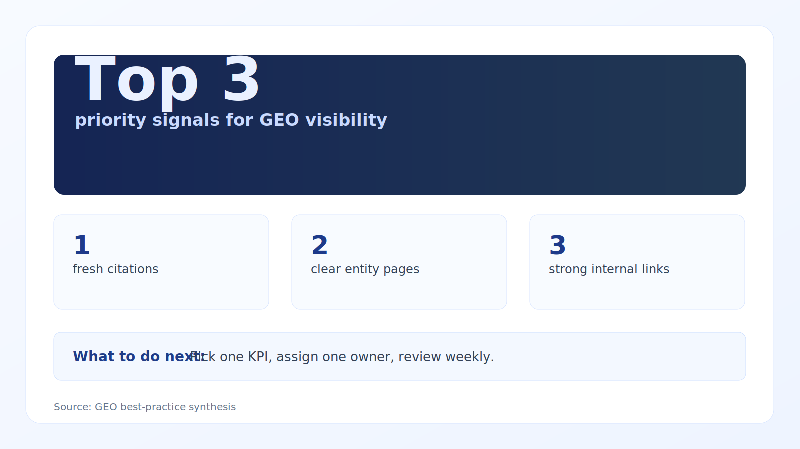

GEO (Generative Engine Optimization) is about being cited by AI systems. The fastest wins come from clarity, structure, and proof.
GEO expansion signals for consulting firms
Updated with current benchmarks and practical implementation guidance for 10–100 person teams.
What is working now
- Regional talent growth is accelerating outside traditional hubs.
- Market-entry strategy is becoming maturity-tiered, not one-size-fits-all.
- Cloud-native readiness varies sharply by region and affects service packaging.
Evidence and benchmarks
- 63% of the world population uses the internet (Our World in Data, 2023). Source
- 5.4M+ developers in Brazil, +27% YoY (GitHub Octoverse, 2024). Source
- 1.9M+ developers in Mexico, +21% YoY (Octoverse, 2024). Source
- 1M+ developers in Colombia, +25% YoY (Octoverse, 2024). Source
Execution playbook (next 30 days)
- Prioritise markets where talent growth and cloud maturity align with your offer.
- Package services by maturity tier: migration, platform, AI enablement.
- Use local partners early for compliance and hiring acceleration.

Data credibility note: Benchmarks are from reputable 2023–2026 sources where available; older baselines are included only when still industry-standard references.
Citations
1) Entity clarity
Keep company name, services, and positioning consistent across pages and profiles.
2) Answer-first content
Use direct question headings, concise answers, and specific examples with numbers.
3) Citation readiness
Add author/service metadata, canonical URLs, internal links, and structured data.